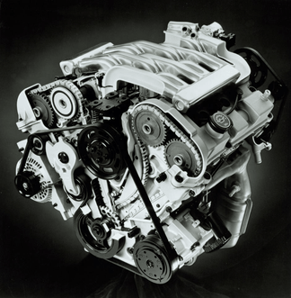

MOTOREDuratec Engine
Duratec è il diminutivo di DURAble TECnology ed è un marchio della Ford Motor Company utilizzato per la gamma di autovetture a benzina a quattro cilindri, cinque cilindri e sei cilindri.
Il motore originale Duratec V6 è stato progettato da Ford e Porsche.
Ford fu la prima ad introdurre questo motore e lo fece nel 1993 con la Ford Mondeo.
Nel corso del tempo, il nome "Duratec" è stato utilizzato persino nei motori a benzina di Ford non collegati al V6 originale. I motori Ford Zeta, Ford Sigma e il Ford Cyclone portano infatti il nome Duratec, ma sono estranei sia tra di loro sia al Duratec V6 originale del 1993. L'utilizzo ambiguo del nome da parte di Ford è simile all'uso di Zetec per la precedente generazione di motori a benzina, Duratorq per i motori diesel e EcoBoost per i motori a benzina turbocompressi.

DURATEC 25
Il motore montato sulla Ford Cougar europea prende il nome di Duratec 25.
Si tratta di un V6 da 2,5 litri (2544 cm³) con architettura a 60°, distribuzione DOHC a 24 valvole e doppia catena di distribuzione. Nella Cougar sviluppa 170 CV e 223 Nm di coppia, offrendo un'erogazione fluida e progressiva che privilegia elasticità e affidabilità rispetto alla potenza assoluta.
Introdotto a metà degli anni Novanta, il Duratec V6 è stato utilizzato su numerosi modelli Ford e rappresenta uno dei motori più apprezzati della sua generazione. La sua robustezza e la presenza della distribuzione a catena hanno contribuito alla reputazione di affidabilità che ancora oggi lo accompagna.
DURATEC V6
Il progetto Duratec V6 nasce all'interno del programma motori Ford degli anni Novanta e ha visto il coinvolgimento di più realtà ingegneristiche durante il suo sviluppo.
Le prime fasi progettuali furono realizzate con il contributo di Porsche Engineering, mentre Cosworth partecipò allo sviluppo di alcune soluzioni tecniche e produttive. Il risultato fu un moderno sei cilindri a V compatto, leggero e particolarmente adatto sia alle berline sia alle coupé sportive del gruppo Ford.
Nel corso degli anni il Duratec V6 è stato impiegato, con diverse evoluzioni e cilindrate, anche su modelli Ford, Mercury, Mazda e Jaguar, confermandosi una delle famiglie di motori più importanti prodotte dal gruppo.
COSWORTH
Il nome Cosworth è storicamente legato ad alcune delle più celebri motorizzazioni Ford ad alte prestazioni.
Durante lo sviluppo del Duratec V6, Cosworth contribuì a diversi aspetti tecnici del progetto, collaborando con Ford nella definizione e nell'ottimizzazione di alcune componenti del motore. Questa esperienza maturata nelle competizioni e nei propulsori sportivi contribuì alla realizzazione di un V6 moderno, affidabile e capace di offrire prestazioni brillanti pur mantenendo un'elevata utilizzabilità nell'impiego quotidiano.
L'eredità tecnica del Duratec V6 è rimasta evidente negli anni successivi, grazie all'utilizzo della stessa architettura di base su numerosi modelli del gruppo Ford e dei marchi collegati.